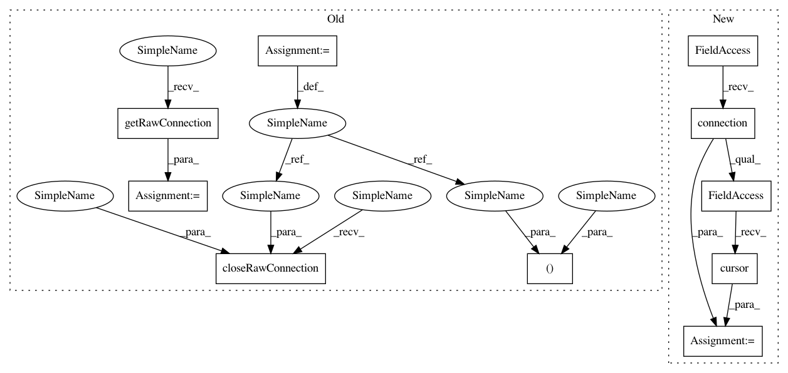

b2983c70694f3c516453257ac21ea2d819aae0b3,SecuML/experiments/Data/Dataset.py,Dataset,loadIdents,#Dataset#,68
Before Change
self.project,
self.dataset),
"idents.csv")
db, cursor = db_tools.getRawConnection()
if db_tools.isMysql():
query = "LOAD DATA LOCAL INFILE \"" + filename + "\" "
query += "INTO TABLE " + "instances" + " "
query += "CHARACTER SET UTF8 "
query += "FIELDS TERMINATED BY \",\" "
query += "OPTIONALLY ENCLOSED BY \""\" "
query += "IGNORE 1 LINES "
query += "SET dataset_id = " + str(self.dataset_id) + ","
query += "row_number = NULL"
query += ""
cursor.execute(query)
query = "SET @pos = 0;"
cursor.execute(query)
query = "UPDATE instances SET row_number = "
query += "( SELECT @pos := @pos + 1 ) WHERE dataset_id = " + \
str(self.dataset_id)
query += ""
cursor.execute(query)
elif db_tools.isPostgresql():
timestamps = False
with open(filename, "r") as f:
reader = csv.reader(f)
header = next(reader)
if len(header) == 3:
timestamps = True
query = "CREATE TEMPORARY TABLE instances_import("
query += "user_instance_id integer, "
query += "ident varchar(200), "
query += "timestamp timestamp DEFAULT null,"
query += "dataset_id integer DEFAULT " + str(self.dataset_id) + ","
query += "row_number serial PRIMARY KEY"
query += ");"
cursor.execute(query)
with open(filename, "r") as f:
if timestamps:
query = "COPY instances_import(user_instance_id,ident,timestamp) "
else:
query = "COPY instances_import(user_instance_id,ident) "
query += "FROM STDIN "
query += "WITH CSV HEADER DELIMITER AS \",\" ;"
cursor.copy_expert(sql=query, file=f)
query = "INSERT INTO instances(user_instance_id,ident,timestamp,dataset_id,row_number) "
query += "SELECT user_instance_id, ident, timestamp, dataset_id, row_number "
query += "FROM instances_import;"
cursor.execute(query)
db_tools.closeRawConnection(db, cursor)
def loadGroundTruth(self, logger):
annotations_file = path.join(dir_exp_tools.getDatasetDirectory(
self.project,
After Change
self.project,
self.dataset),
"idents.csv")
cursor = self.session.connection().connection.cursor()
if db_tools.isMysql():
query = "LOAD DATA LOCAL INFILE \"" + filename + "\" "
query += "INTO TABLE " + "instances" + " "
query += "CHARACTER SET UTF8 "
In pattern: SUPERPATTERN
Frequency: 3
Non-data size: 10
Instances
Project Name: ANSSI-FR/SecuML
Commit Name: b2983c70694f3c516453257ac21ea2d819aae0b3
Time: 2018-07-26
Author: anael.bonneton@ssi.gouv.fr
File Name: SecuML/experiments/Data/Dataset.py
Class Name: Dataset
Method Name: loadIdents
Project Name: ANSSI-FR/SecuML
Commit Name: b2983c70694f3c516453257ac21ea2d819aae0b3
Time: 2018-07-26
Author: anael.bonneton@ssi.gouv.fr
File Name: SecuML/experiments/Experiment.py
Class Name: Experiment
Method Name: _setAnnotationsFilename
Project Name: ANSSI-FR/SecuML
Commit Name: b2983c70694f3c516453257ac21ea2d819aae0b3
Time: 2018-07-26
Author: anael.bonneton@ssi.gouv.fr
File Name: SecuML/experiments/Data/Dataset.py
Class Name: Dataset
Method Name: loadGroundTruth